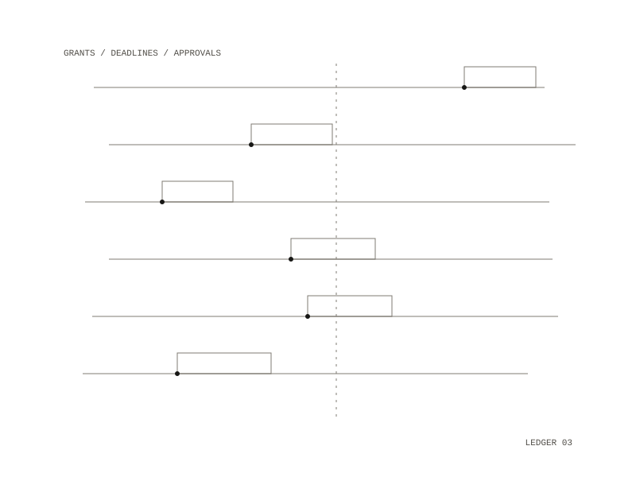

Grant Agent
Grant Agent is a grant officer that runs on its own. It looks for grant opportunities, tracks their deadlines, drafts applications and moves them through a submission pipeline, working against a budget toward measurable goals, under fixed guardrails. It is built against reasoning drift, where an agent slowly comes to believe its own fabrications: its durable record is written from what actually happened, not from what the model says happened.

Each cycle
The agent wakes daily, with weekly and monthly roll-ups. On each tick it:
- reads its state (balance, pipeline, goals, recent history) from a local database, so its memory survives restarts
- reviews opportunities, drafts applications and sets deadline reminders through a fixed set of tools
- asks permission before spending money or submitting anything
- writes a journal of what changed, measured from the ledger and pipeline rather than from the model's account
Federal opportunities are found in code before each tick: grants.gov queries are generated from the applicant's profile, checked for deadline and fit, and ranked, so the model spends its effort on drafting. The profile holds the mission, focus areas, eligibility and award range.
Guardrails
Spending goes to an overseer agent that sees its own recent decisions and the running total, so it can catch a pattern of over-generosity; hard spend caps are enforced in code and no approver can override them. Submitting an application is irreversible, so it goes to a human approval queue and the agent cannot submit until a person approves. If the agent makes no real progress for several ticks, it flags a stall and pauses for review. The deterministic tests show that a model that lies cannot corrupt the stored state.
Engine and setup
The agent runs in Docker and only reaches the network through an egress allowlist. It can use a hosted model or a local one, switched from the dashboard without a rebuild; with a local model it searches grants.gov only. Broader web discovery, for foundation and state grants, is designed to go through the hosted model. A local dashboard shows the pipeline, budget, recent activity and goals, with approve and reject buttons. The grant officer is one domain on a general agent engine that can also run a radio station by swapping one module.
spending: an overseer agent; submitting: a person
Python and SQLite in Docker, with network egress limited to an allowlist; a hosted or a local model